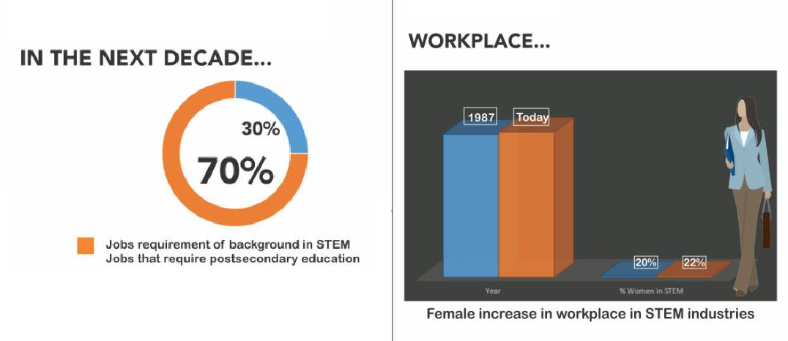

About us
Our Mission
Provision of STEM education through free, creative, and hands-on skills development programs to encourage females, visible minorities, and underserved youths to pursue science, technology, engineering and mathematics (STEM) careers.
Provision of a one-to-one mentoring program to foster skill development, career guidance, risk management and feedback provision, to females and visible minority STEM professionals and entrepreneurs.
Why STEMHub Foundation?
Women are always less likely to choose a STEM program, regardless of mathematical ability. In addition, women in STEM careers are underpaid when compared to their male counterpart.
Visible minorities hold only 4.6% of leadership roles in Canadian organizations despite having 66.3% of their population in the labour force.
 Photo by STEMHub Foundation
Meet Our Founder

Founder & Creative Director
Dr. Olubamiji beats the circle of poverty through education to become the first black person to obtain a PhD in Biomedical Engineering from the University of Saskatchewan in 2017. As such, she has first-hand knowledge of how limited access to funds, exposure to dangerous neighborhoods and being a woman can be a barrier to becoming a good citizen.
As a trailblazer and scientist specializing in cutting-edge additive manufacturing (3D-printing) of metal and plastic components for demanding industrial applications, she has a deep understanding of the role of mentorship in career projections. Dr. Olubamiji was recently nominated as a 2018 Woman of Inspiration by the Canadian Business chicks. Some of her other awards include 2018 Ondo state Female Role Model, 2017 Woman of Outstanding Achievement in Education by the Nigerian-Canadian Association, 2018 STEM Power Award Recipient at the STEM Power Conference, Lagos.
Named one of Canada’s 150 black women making Canada better by the Canadian Broadcasting Corporation for the celebration of Canada at 150, Dr. Olubamiji was recently nominated as a 2018 Woman of Inspiration by the Canadian Business chicks. Some of her other awards include 2018 Ondo state Female Role Model, 2017 Woman of Outstanding Achievement in Education by the Nigerian-Canadian Association, 2018 STEM Award Recipient at the STEM Power Conference, Lagos.
As a Material Scientist, Additive Manufacturing Engineer, youth and STEM ambassador, Dr. Olubamiji is a frequent speaker and panelist at tech events around the world where she discusses her work in the area of Additive Manufacturing of metal and polymeric OEMS for several complex industrial applications. She has also been featured on various platforms including Canadian Broadcastig Corporation (CBC), British Broadcasting Corporation (BBC) National Public Radio (NPR), Guardian Nigeria, Nigerian Tribune, Punch Newspaper, City People Nigeria, and over 50 online news / media platforms.
Prior to establishing STEMHub Foundation, Dr. Olubamiji has volunteered with organizations such as the Empowerment of African Women Organization Finland; Food for the Hungry, Saskatoon, Canada; Let’s Talk Science Canada; Engineering Graduate Community Council, University of Saskatchewan; Yoruba Heritage School Saskatoon; the African Experience Toronto, Canada and so on.